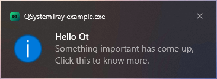

QSystemTrayIcon Class
The QSystemTrayIcon class provides an icon for an application in the system tray. More...
| Header: | #include <QSystemTrayIcon> |
| CMake: | find_package(Qt6 REQUIRED COMPONENTS Widgets) target_link_libraries(mytarget PRIVATE Qt6::Widgets) |
| qmake: | QT += widgets |
| Inherits: | QObject |
Public Types
| enum | ActivationReason { Unknown, Context, DoubleClick, Trigger, MiddleClick } |
| enum | MessageIcon { NoIcon, Information, Warning, Critical } |
Properties
Public Functions
| QSystemTrayIcon(QObject *parent = nullptr) | |
| QSystemTrayIcon(const QIcon &icon, QObject *parent = nullptr) | |
| virtual | ~QSystemTrayIcon() |
| QMenu * | contextMenu() const |
| QRect | geometry() const |
| QIcon | icon() const |
| bool | isVisible() const |
| void | setContextMenu(QMenu *menu) |
| void | setIcon(const QIcon &icon) |
| void | setToolTip(const QString &tip) |
| QString | toolTip() const |
Public Slots
| void | hide() |
| void | setVisible(bool visible) |
| void | show() |
| void | showMessage(const QString &title, const QString &message, QSystemTrayIcon::MessageIcon icon = QSystemTrayIcon::Information, int millisecondsTimeoutHint = 10000) |
| void | showMessage(const QString &title, const QString &message, const QIcon &icon, int millisecondsTimeoutHint = 10000) |
Signals
| void | activated(QSystemTrayIcon::ActivationReason reason) |
| void | messageClicked() |
Static Public Members
| bool | isSystemTrayAvailable() |
| bool | supportsMessages() |
Reimplemented Protected Functions
| virtual bool | event(QEvent *e) override |
Detailed Description
Modern operating systems usually provide a special area on the desktop, called the system tray or notification area, where long-running applications can display icons and short messages.

The QSystemTrayIcon class can be used on the following platforms:
- All supported versions of Windows.
- All Linux desktop environments that implement the D-Bus StatusNotifierItem specification, including KDE, Gnome, Xfce, LXQt, and DDE.
- All window managers and independent tray implementations for X11 that implement the freedesktop.org XEmbed system tray specification.
- All supported versions of macOS.
To check whether a system tray is present on the user's desktop, call the QSystemTrayIcon::isSystemTrayAvailable() static function.
To add a system tray entry, create a QSystemTrayIcon object, call setContextMenu() to provide a context menu for the icon, and call show() to make it visible in the system tray. Status notification messages ("balloon messages") can be displayed at any time using showMessage().
If the system tray is unavailable when a system tray icon is constructed, but becomes available later, QSystemTrayIcon will automatically add an entry for the application in the system tray if the icon is visible.
The activated() signal is emitted when the user activates the icon.
Only on X11, when a tooltip is requested, the QSystemTrayIcon receives a QHelpEvent of type QEvent::ToolTip. Additionally, the QSystemTrayIcon receives wheel events of type QEvent::Wheel. These are not supported on any other platform. Note: Since GNOME Shell version 3.26, not all QSystemTrayIcon::ActivationReason are supported by the system without shell extensions installed.
See also QDesktopServices, Desktop Integration, and System Tray Icon Example.
Member Type Documentation
enum QSystemTrayIcon::ActivationReason
This enum describes the reason the system tray was activated.
| Constant | Value | Description |
|---|---|---|
QSystemTrayIcon::Unknown | 0 | Unknown reason |
QSystemTrayIcon::Context | 1 | The context menu for the system tray entry was requested |
QSystemTrayIcon::DoubleClick | 2 | The system tray entry was double clicked. |
Note: On macOS, a double click will only be emitted if no context menu is set, since the menu opens on mouse press
| Constant | Value | Description |
|---|---|---|
QSystemTrayIcon::Trigger | 3 | The system tray entry was clicked |
QSystemTrayIcon::MiddleClick | 4 | The system tray entry was clicked with the middle mouse button |
See also activated().
enum QSystemTrayIcon::MessageIcon
This enum describes the icon that is shown when a balloon message is displayed.
| Constant | Value | Description |
|---|---|---|
QSystemTrayIcon::NoIcon | 0 | No icon is shown. |
QSystemTrayIcon::Information | 1 | An information icon is shown. |
QSystemTrayIcon::Warning | 2 | A standard warning icon is shown. |
QSystemTrayIcon::Critical | 3 | A critical warning icon is shown. |
See also QMessageBox.
Property Documentation
icon : QIcon
This property holds the system tray icon
On Windows, the system tray icon size is 16x16; on X11, the preferred size is 22x22. The icon will be scaled to the appropriate size as necessary.
Access functions:
| QIcon | icon() const |
| void | setIcon(const QIcon &icon) |
toolTip : QString
This property holds the tooltip for the system tray entry
On some systems, the tooltip's length is limited. The tooltip will be truncated if necessary.
Access functions:
| QString | toolTip() const |
| void | setToolTip(const QString &tip) |
visible : bool
This property holds whether the system tray entry is visible
Setting this property to true or calling show() makes the system tray icon visible; setting this property to false or calling hide() hides it.
Access functions:
| bool | isVisible() const |
| void | setVisible(bool visible) |
Member Function Documentation
QSystemTrayIcon::QSystemTrayIcon(QObject *parent = nullptr)
Constructs a QSystemTrayIcon object with the given parent.
The icon is initially invisible.
See also visible.
QSystemTrayIcon::QSystemTrayIcon(const QIcon &icon, QObject *parent = nullptr)
Constructs a QSystemTrayIcon object with the given icon and parent.
The icon is initially invisible.
See also visible.
[virtual noexcept] QSystemTrayIcon::~QSystemTrayIcon()
Removes the icon from the system tray and frees all allocated resources.
[signal] void QSystemTrayIcon::activated(QSystemTrayIcon::ActivationReason reason)
This signal is emitted when the user activates the system tray icon. reason specifies the reason for activation. QSystemTrayIcon::ActivationReason enumerates the various reasons.
See also QSystemTrayIcon::ActivationReason.
QMenu *QSystemTrayIcon::contextMenu() const
Returns the current context menu for the system tray entry.
See also setContextMenu().
[override virtual protected] bool QSystemTrayIcon::event(QEvent *e)
Reimplements: QObject::event(QEvent *e).
QRect QSystemTrayIcon::geometry() const
Returns the geometry of the system tray icon in screen coordinates.
See also visible.
[slot] void QSystemTrayIcon::hide()
Hides the system tray entry.
[static] bool QSystemTrayIcon::isSystemTrayAvailable()
Returns true if the system tray is available; otherwise returns false.
If the system tray is currently unavailable but becomes available later, QSystemTrayIcon will automatically add an entry in the system tray if it is visible.
[signal] void QSystemTrayIcon::messageClicked()
This signal is emitted when the message displayed using showMessage() was clicked by the user.
Note: We follow Microsoft Windows behavior, so the signal is also emitted when the user clicks on a tray icon with a balloon message displayed.
See also activated().
void QSystemTrayIcon::setContextMenu(QMenu *menu)
Sets the specified menu to be the context menu for the system tray icon.
The menu will pop up when the user requests the context menu for the system tray icon by clicking the mouse button.
Note: The system tray icon does not take ownership of the menu. You must ensure that it is deleted at the appropriate time by, for example, creating the menu with a suitable parent object.
See also contextMenu().
[slot] void QSystemTrayIcon::show()
Shows the icon in the system tray.
[slot] void QSystemTrayIcon::showMessage(const QString &title, const QString &message, QSystemTrayIcon::MessageIcon icon = QSystemTrayIcon::Information, int millisecondsTimeoutHint = 10000)
Shows a balloon message for the entry with the given title, message and icon for the time specified in millisecondsTimeoutHint. title and message must be plain text strings.
Message can be clicked by the user; the messageClicked() signal will emitted when this occurs.
Note that display of messages are dependent on the system configuration and user preferences, and that messages may not appear at all. Hence, it should not be relied upon as the sole means for providing critical information.
On Windows, the millisecondsTimeoutHint is usually ignored by the system when the application has focus.
Has been turned into a slot in Qt 5.2.
See also show() and supportsMessages().
[slot] void QSystemTrayIcon::showMessage(const QString &title, const QString &message, const QIcon &icon, int millisecondsTimeoutHint = 10000)
This function overloads showMessage().
Shows a balloon message for the entry with the given title, message, and custom icon icon for the time specified in millisecondsTimeoutHint.
[static] bool QSystemTrayIcon::supportsMessages()
Returns true if the system tray supports balloon messages; otherwise returns false.
See also showMessage().